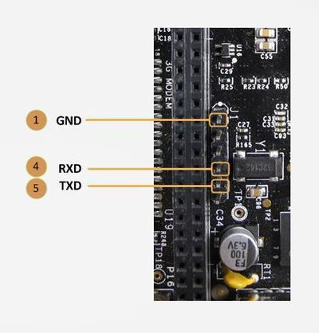
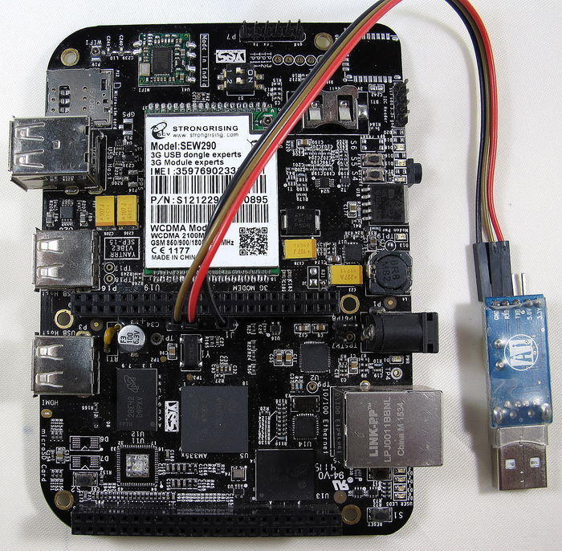

Use usbserial adapter
VIBE2 also provides a USB-UART serial connectivity for ssh.
Instructions
- For ssh and console access to VIBE2 over UART port, use a 3.3V UART to USB adapter.

-
On VIBE2 there are two UART0 headers provided J1 (33) and P7(25).
-
Each VIBE2 is provided with a USB-to-UART adapter and a 3 wire jumper cable. It has to be interfaced with VIBE2 in the following manner:
a. GND pin on adapter : Pin J1.1 (GND)
b. TX pin on adapter : Pin J1.4 (RXD)
c. RX Pin on adapter : Pin J1.5 (TXD)
-
Similar interface can be done with P7 UART0 header if J1 is inaccessible when a cape is mounted. P7 header has markings on the board.
-
Connect the USB port of the adapter to a Host (like a PC).
-
Open the serial/COM port on the Host in a serial port emulator like Putty with following parameters :
Baud rate : 115200, 8 data bits, No parity bit and 1 stop bit -
For windows, check Device manager for COM port against PL2303 USB devices.
-
In Linux, simple interface like /dev/ttyUSB0 should be available.
Please refer to the image provided below for connections.
